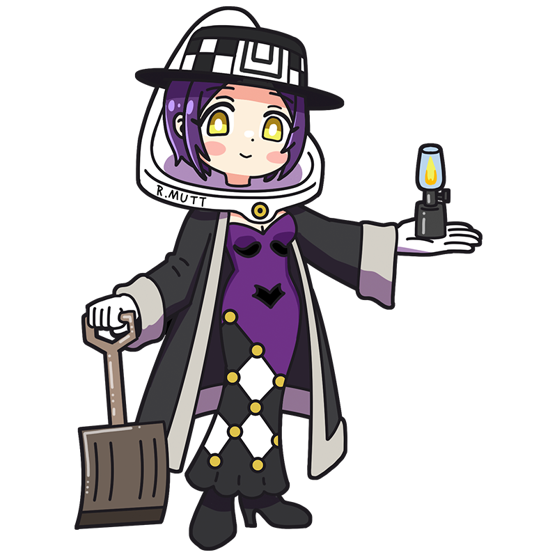

しょうもないルールね。
便器みたいに、
ひっくり返してしまいましょう？
デュシャン
古き芸術を脱するカギが
その手に与えられたとせよ
現代芸術を生んだと言われる孤高のミューズ。世の中を冷ややかに見つめる皮肉屋だが、それは古典芸術への強烈な反発からくる闘争心のあらわれなのだ。チェスに目がなく、一度集中すると寝食を忘れてのめりこむほど。
様式
ダダイスム
出身国
フランス
代表作
"泉"
"彼女の独身者たちによって裸にされた花嫁、さえも"
"L.H.O.O.Q." etc.
デュシャンといえばこの一枚！
泉
「レディメイド(既製品)」作品の金字塔。市販の男性用小便器を横にしてサインを入れただけの作品だが、その異様さ故に「はたしてこれを芸術と呼べるのか」という議論を世の中に叩きつけることとなった。オリジナルは消失しているが、性質上複製が容易であるためいくつかのレプリカが存在している。
制作年
1917年
技法・材質
セラミック製男性用小便器
寸法
61 cm x 36 cm x 48 cm
所蔵
オリジナルは消失。レプリカが複数存在する
作品画像出典: https://commons.wikimedia.org/wiki/File:Duchamp_Fountaine.jpg
デュシャンってどんな芸術家？
マルセル・デュシャン
「レディメイド(既製品)」という手法で20世紀美術に計り知れない影響を与えたフランスの芸術家。既製の便器をそのまま展示した《泉》は、発表から100年以上経った今なお現代美術の象徴として語られている。近年では彼の作品の発想や制作に、同じダダイストの芸術家であるエルザ・フォン・フライターク＝ローリングホーフェンが関わっていた可能性も再検討されており、研究が続けられている。
フルネーム
Henri-Robert-Marcel Duchamp
誕生
1887年7月28日
死没
1968年10月2日(81歳没)